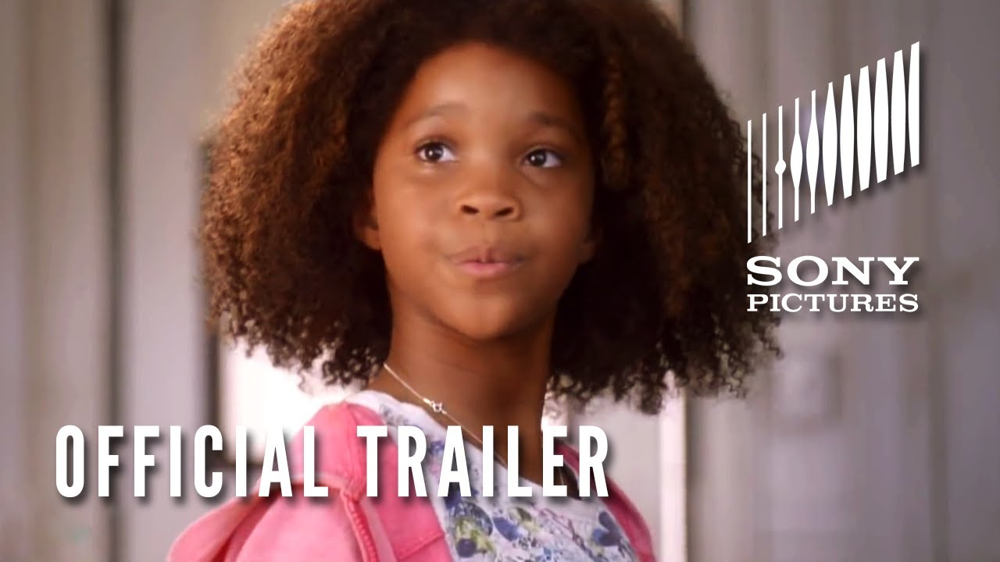

Annie is a 1982 American musical comedy-drama based on the 1977 Broadway musical of the same name. by Charles Strouse Martin Charnin and Thomas Meehan. which in turn is based on the Little Orphan Annie comic strip created by Harold Gray. Directed by John. Hi and welcome to the Annie to his home. hi is good to annie. Miss Hannigan. The orphanage has child labor because everyone except Miss Hannigan has to work. from when they get up till when they're asleep. When Grace Farrell visits one day. Miss Hannigan didn't want Annie to stay with Oliver for a week. As his relationship grows with Annie. He decides to adopt her and Annie now lives with him. In the musical he adopts all orphans. 